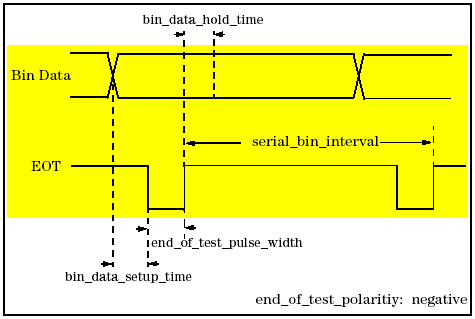

Configuration Parameters for GPIO Waveform Setup
These parameters define the shape and timing of signals transmitted between the driver and the equipment through the GPIO interface.
Note Driver Revision 3.2 supports only handlers, not probers, connected via a GPIO
interface.
The figure below shows the timing of all binning related signals.
